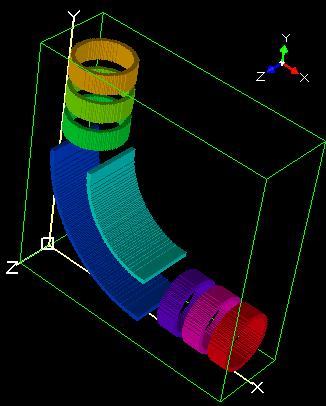
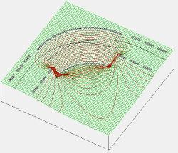
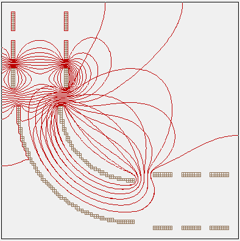
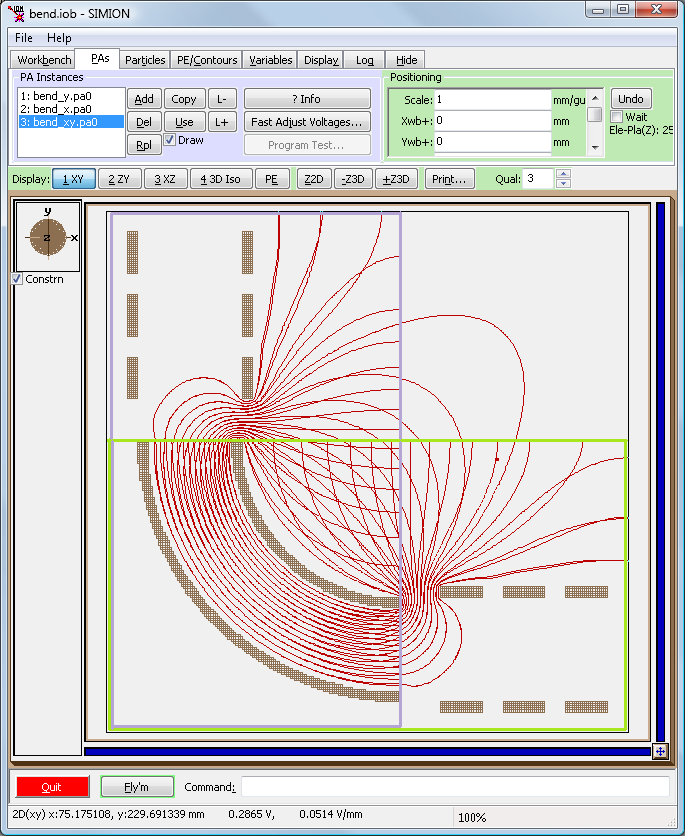
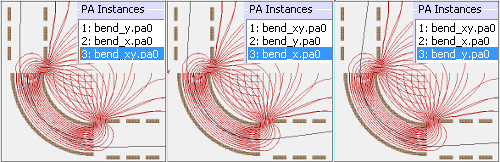
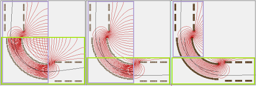
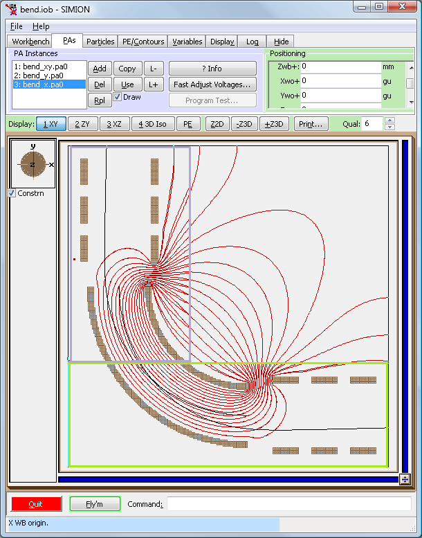
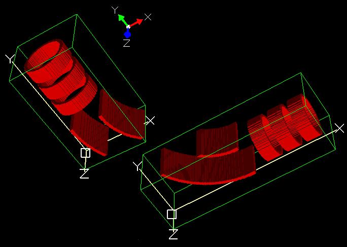
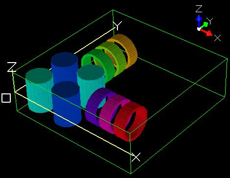

Purpose
This example demonstrates how to efficiently model two beam lines that join at a 90 degree angle by breaking the system into two smaller arrays that overlap at the 90 degree bend and then cropping at least one of the arrays. It is a good example of splitting a system into two arrays when no good cutting plane may exist.
This is an intermediate example, most useful to people who are running into array size limits. The techniques are not difficult to apply but do take some care and experience to not apply the techniques incorrectly.
System requirements: SIMION 8.0.4 or above (required for Crop function).
Discussion
The system: The basic system studied here consists of two axial lens systems that join at a 90 degree angle by a cylindrical bender (cylindrical mirror analyzer, CMA, energy filter [1]), as shown in the below figures:


The system has Z mirroring enabled, which reduces the memory requirements by half.
Modeling as a single array: As usual, it is simplest to model this system as a single array. Refining the system as a single array more easily ensures correct calculation of fields since it solves the Laplace equation over the entire system. In fact, we do this in the bend_xy.iob example shown in the figures above. bend_xy.iob uses the bend_xy.pa0 solution array, which was refined from the bend_xy.pa# definition array, which was generated from the bend_xy.gem geometry file, which defines the entire system. However, this array is not the most efficient since it contains a lot of empty, unused space in the upper-right corner as seen in the figure above. This empty space contains relatively small fields with little ability to leak into the regions that matter, i.e. where particles fly, so it would be best to discard these points. Moreover, if we need to extend the length of two beam lines by a factor of N, the number of points in this empty space would grow by a factor of N2.
Choosing the cutting plane: A solution to obtaining better memory efficiency is to break the array into two smaller arrays. However, in this example we don't necessarily have a convenient location to cut the large array such that the boundary conditions along the cut could be conveniently defined in the two smaller arrays. Proper definition of this boundary is necessary for the two smaller arrays to be solved (i.e. refined) independently and still obtain a correct field solution. A "conveniently defined" boundary condition usually means that the cutting surface has a known uniform potential or a known zero derivative of potential normal to the surface. The former is a type of Dirichlet boundary condition, which in SIMION is expressed with electrode points of given potential. The latter is a type of Neumann boundary condition, which in SIMION is expressed with non-electrode points along a potential array boundary. Therefore, cutting planes are often more conveniently positioned along surfaces of ideal grids, planes of mirror symmetry, or regions that are field-free, or at least field-free in the axial direction. An example of a region field-free in the axial direction is the center section of a set of long multipole rods, like the "quad" and "octupole" examples, which are not in general field-free but are so in the axial direction. It can be sufficient for these conditions to hold only approximately: at, say, one-two diameters into the end of a long tube, the fringe fields may be nearly negligible (< 1%). In the example here, the center region of the Einzel lenses could be essentially field-free if, as shown in the potential energy surface above, the same potential is applied to all Einzel lens rings. This is nearly equivalent to the rings being merged to form a single long tube. This is not the usual operating mode of an Einzel lens, so we'll assume for the sake of generality that we cannot take this approach. Furthermore, in an Einzel lens the outer rings are generally of the same size and held at the same potential, so there is an approximate plane of mirror symmetry through the middle of the center ring, and we might define the cut on this plane. However, we'll again assume for generality that the three rings are not necessarily symmetrical. We can't cut at the ends of the bender since there are fringe fields here that cannot be easily defined a priori. We might conceivably cut at the center of the bender since here we can define a plane such that normal derivative of potential is effectively zero provided the plane is at sufficiently large distance from the bender ends that cause fringe fields and provided the particles don't get too close to the edges of the cylinder where fringe fields can also occur. However, this boundary condition is not easily expressed in SIMION (except maybe with a script, like in the "swirl" example, to explicitly sets electrode point potentials along this plane according to the theoretical potential of an ideal cylindrical mirror analyzer [1]). For the sake of generality and simplicity, we'll assume we don't want to take that approach either.
Cuttings based on field isolation: A good solution to our problem lies in that observation that the fields in the two beam-lines are essentially isolated from each other by the bender. Regardless the potentials we apply to the rings on one beam line, these will have negligible effect on the fields inside the other beam line because the bender provides a high degree of field isolation. The fields from the beam line will only leak a certain distance into the bender and then dissipate to zero.

The above figure shows this effect. Fringe fields from potentials applied to the lens electrode facing the top end of the bender only leak a short distance into the bender. At sufficient distance into the bender, contour lines are essentially identical regardless of potentials applied to the beam line electrodes.
Therefore, if we cut the array along a horizontal plane touching the top entrance of the bender (like in bender_x.pa#, generated from bender_x.gem), and don't define any special boundary conditions, the fields near the top entrance of the bender will become distorted; however, the fields in the middle of the bender and all the way through the entire horizontal beam-line will remain accurate. Alternately, if we cut the system along a vertical plane touching the right entrance of the bender (like in bender_y.pa#, generated form bender_y.gem), the fields near the right entrance of the bender will become distorted; however, the fields in the middle of the bender and all the way through the entire vertical beam-line will remain accurate.

The example bend.iob contains these two smaller arrays (bend_x.pa0 and bend_y.oa0) that have been cut. For comparison, it also superimposes the original array (bend_xy.pa0) and displays contours. This is shown in the above figure. Note that all three sets of contour lines are in agreement in the center of the bender, but in each of the two cutting regions, the contours of one of the two smaller arrays diverges significantly. With this in mind, we can determine the field over the entire useful system (bender_xy.pa#) by instead solving the bender_x.pa# and bender_y.pa# arrays and knowing that we should ignore the regions in each array that are close to the cuts. Each cut is in a region where the two arrays overlap, so every point in the system has at least one array where the fields are accurate.
File sizes after cutting: The file sizes of the definition arrays (PA# files), refined base solution arrays (PA0) and refined electrode solution arrays (.pa_, .pa1, .pa2, etc. files) can be seen in Windows Explorer:
20664360 bend_xy.pa# 11608280 bend_x.pa# 11608280 bend_y.pa# 20664500 bend_xy.pa0 11608420 bend_x.pa0 11608420 bend_y.pa0 20664360 bend_xy.pa1 11608280 bend_x.pa4 11608280 bend_y.pa1 20664360 bend_xy.pa2 11608280 bend_x.pa5 11608280 bend_y.pa2 20664360 bend_xy.pa3 11608280 bend_x.pa6 11608280 bend_y.pa3 20664360 bend_xy.pa4 11608280 bend_x.pa7 11608280 bend_y.pa4 20664360 bend_xy.pa5 11608280 bend_x.pa8 11608280 bend_y.pa5 20664360 bend_xy.pa6 20664360 bend_xy.pa7 20664360 bend_xy.pa8
The definitions arrays (.PA#) only affect refining and are ignored in the View screen. The base solution arrays (.PA0) are loaded into the workbench and are using in the particle flying. The electrode solution arrays (.pa_, .pa1, .pa2, etc. files) are used during the fast adjust procedure. The electrode solution array sizes are most important for any electrodes that are fast adjusted during the fly'm (e.g. RF waveforms) for then these arrays are loaded simultaneously into memory, which multiplies the memory requirements.
The size of the bend_x.pa# and bend_y.pa# files above are about the same as the original bend_xy.pa# since even though the smaller arrays omit the upper-right region, they redundantly overlap the lower-left region of the XY view. So, there may seem to be no benefit in splitting the array. However, if the beam lines are made longer, the upper-right region would become much larger than the lower-left region, which would lead to significant memory savings with this technique. Even in this example, there is a benefit to splitting the array. The total size of the refined electrode solution arrays (i.e. .pa_, .pa1, .pa2, .etc. files) is 25% smaller after splitting because some solution arrays are omitted (e.g. bend_x.pa1, bend_x.pa2, and bend_x.pa3). This is because the X beam line doesn't need to include solutions for electrodes in the Y beam line and vice versa.
Two problems still remain to be solved:
- How to make sure flying particles see the fields in the correct array.
- How to make the contour and PE plots less messy (ignore regions near cuts).
We shall see that the "Crop" function allows us to solve both of these and at the time further reduce memory usage during the Fly'm.
PA instance order: The order of potential array instances in the PA Instances list (PAs tab on the View screen) is important. When a particle exists in some region where at least two electrostatic array instances overlap, the particle only sees the electric fields from the array with the highest instance number. The example bend.iob contains both bend_x.pa0 and bend_y.pa0 array instances as well as, for comparison, the original bend_xy.pa0 instance. Initially, bend_xy.pa0 has the highest instance number (3) and it completely overlaps the other two arrays, so bend_xy.pa0 completely overrides the fields in the other two arrays, as if they didn't exist. You may change the instance order with the "L-" and "L+" buttons on the PAs tab. The below figure compares the effect on particle trajectories if the bend_xy.pa0 is changed to the lowest priority, effectively disabling it as if you deleted the array instance from the workbench, and making either bend_x.pa0 or bend_y.pa0 have this highest priority. If bend_x.pa0 is given highest priority followed by bend_y.pa0, particles inside the X beam line and bender see fields from the bend_x.pa0, while particles inside the Y beam line (excluding the bender) see fields from the bend_y.pa0. The problem here is that bend_x.pa0 only accurately represents the fields in the bender inside the lower-right half of the bender, while bend_y.pa0 only accurately represents the fields in the bender inside the upper-left half of the bender. There's no way to order the PA instances so that particles see correct fields in the entire overlap region.

PA cropping: The solution to this problem is to "crop" one of the refined arrays after refining. Cropping removes points from an array. Basically, we'll take the refined bend_x.pa0 and reduce its size in the vertical direction so that bend_x.pa0 only covers the lower region of the bender where fields are accurate. It's essential that cropping be done after refining (i.e. crop the .pa0 file) not before refining (i.e. crop the .pa# file) and that you re-crop if you ever re-refine the original .pa# array. Cropping can alter the boundary conditions that determine the solution to the Laplace equation obtained by Refine. For example, non-electrode points on edges of potential arrays effectively define Neumann boundary conditions, and cropping moves the location of this edge.
So, crop the bend_x.pa0 file in the region y <= 80 gu. (To do so, with bend.iob loaded, exit the View screen to get back to the main screen, select the bend_x.pa0 file, and click Modify. Ignore the warning about modifying a .pa0 file since in this special case we really do want to modify a .pa0 file. Make a box selection from (x, y)=(0, 0) gu to (x,y) = (250, 80) gu and click Crop. Say Yes when prompted to crop electrode solution arrays too; doing so allows the cropped array to be fast adjusted. Exit the Modify screen and return to the View Screen. Ignore any warning about the PA size changing. Notice that when you select the bend_x.pa0 in the PAs tab, the box displayed representing the PA volume is smaller.)
Make sure that bend_x.pa0 has the highest priority (3) in the PA Instances list, and that bend_y.pa0 has the next highest priority (2). The bend_xy.pa0 is completely covered by these arrays (at least in regions where particles fly) and so has no effect. In practice, bend_xy.pa0 would normally be deleted from the workbench, but we keep it around here for comparing contours.
It's not essential for correct particle trajectories, but we may also crop the bend_y.pa0 file too. This can further reduce the file size and at least eliminate all overlap to make the contour plots cleaner. (To do so, crop bend_y.pa0 from (x, y) = (0, 80) gu to (x, y) = (95, 250) gu. You will also need to shift the array in the workbench since its origin has changed. In the View screen, on the PAs tab, select the bend_y.pa0. Then in the Positioning panel, set Ywo+ to -80 gu or, similarly, Ywb+ to 80 mm.)


The results before and after each cropping step are show above. Particles now have the correct trajectories under the bend_x.pa0 and bend_y.pa0 arrays, nearly identical to those originally seen when the bend_xy.pa0 array took precedence.
File sizes after cropping: Note also the file sizes after cropping:
20664360 bend_xy.pa# 11608280 bend_x.pa# 11608280 bend_y.pa# 20664500 bend_xy.pa0 6668740 bend_x.pa0 5384880 bend_y.pa0 20664360 bend_xy.pa1 6668600 bend_x.pa4 5384480 bend_y.pa1 20664360 bend_xy.pa2 6668600 bend_x.pa5 5384480 bend_y.pa2 20664360 bend_xy.pa3 6668600 bend_x.pa6 5384480 bend_y.pa3 20664360 bend_xy.pa4 6668600 bend_x.pa7 5384480 bend_y.pa4 20664360 bend_xy.pa5 6668600 bend_x.pa8 5384480 bend_y.pa5 20664360 bend_xy.pa6 20664360 bend_xy.pa7 20664360 bend_xy.pa8
You can ignore the .pa# file sizes since these are unrefined arrays that were not cropped and are not loaded in the View screen. The .pa[0-9] file sizes for bend_x and bend_y have been reduced approximately in half and are about half the total size of those for the original bend_xy.
The splitting may be seen more clearly in the below figure:

As an example of some other things you might do, this example set also includes turning_quad_xy.gem (figure below), which replaces the bender with DC turning quadrupole.

Files in this Demo:
- README.html - Description of example
- bend_include.gem - whole system geometry, included by other GEM files.
- bend_xy.gem - Creates bend_xy.pa# array (entire system in a single array)
- bend_x.gem - Creates bend_x.pa# array (only X beam line + bender)
- bend_y.gem - Creates bend_y.pa# array (only Y beam line + bender)
- bend_xy.iob - workbench containing only bend_xy.pa0.
- bend.iob - workbench containing bend_x.pa0, bend_y.pa0, and (for comparison) bend_xy.pa0.
- turning_quad_xy.gem - alternate DC turning quadrupole geometry (includes turning_quad_include.gem)
Usage
How to run demo:
- 0. Convert bend_x.gem to bend_x.pa#, bend_y.gem to bend_y.pa#, and bend_xy.gem to bend_xy.pa# . (For each GEM file, click Modify, select the GEM file, exit back to the main screen, click Save and enter the name to save as, and click Remove All PAs from RAM.) (You may skip this step in SIMION 8.1.0.31, which will do this automatically upon loading the IOB.)
- 1. View bend.iob. (Click View on main screen and select the bend.iob file.) If this is your first time using the example, you will be asked to refine (confirm that and press Refine). This refines the bend_x.pa#, bend_y.pa#, and bend_xy.pa# arrays, which were already created from their respective GEM files.)
- 2. Select the PAs tab. Notice that three array instances exist in this workbench. If you click on any array it is highlighted with a box in the graphical window. bend_xy.pa0 is a large array representing the entire system. bend_x.pa0 is a smaller cut array covering the horizontal beam line and bender. bend_y.pa0 is another smaller cut array covering the vertical beam line and bender. By default, bend_xy.pa0 has the highest priority, which makes the particles behave as if the other arrays didn't exit (like in bend_xy.iob).
- 3. Contour lines are enabled. By default it displays the top-most Z cross section. To make this more meaningful, I suggest making a 3D zoom on a cross section through the Z=0 plane. (Click the ZY View. Make a vertically thin box selection through the center the system. This would be approximately from (Z, Y) = (2, 250) mm to (Z, Y) = (-2, 0) mm. Click +Z3D. Then switch back to the XY view. If you make a mistake, click -Z3D.) The contour lines on the three arrays are drawn overlapping. You can selectively enable/disable contour lines for a certain array instance by selecting the array instance on the PAs tab and checking or unchecking the Draw checkbox. Note that if you draw only the bend_xy.pa0, the contour lines show fields over the entire system and the fringe fields correctly exist on both ends of the bender. If you draw only bend_x.pa0, the fringe fields exist only on the end of the bender near the X beam line (and similarly for the bend_y.pa0). If you draw all arrays, you'll see that the fields of all three arrays overlap almost exactly in the center of the bender. If you draw both bend_x.pa0 and bend_xy.pa0, you'll see the fields overlap almost exactly in the X beam line as well (and similarly when bend_y.pa0 and bend_xy.pa0 are drawn). You can ignore any field differences outside the bender and beam lines, which are differences due to a lack of defining a ground cage around the system, since particles don't fly here. This agreement between fields in certain regions is what allows us, with proper care, to break the system into multiple arrays (bend_x.pa0 and bend_y.pa0) to be solved in isolation rather than just use a single array (bend_xy.pa0). The agreeement between contours tells us the extent we can do this.
- 4. Click Fly'm. This flies two particles. Each particle is set to start at one end of the bender and fly toward the direction of the other end. The two particles have the same shape due to the implicit symmetry of the system in the X=Y plane. Each particle is tuned to 12.33 eV, which is approximately the energy that would be required for the particle to travel through the center of the bender assuming the bender has no fringe fields and therefore acts like a perfect cylindrical mirror analyzer [1]. However, in practice, there are fringe fields, which you can see from the contour plot, so the particles exit the bender off-center.
- 5. Observe the effect on trajectories on changing PA instance order. (Use the L+ or L- button on PAs tab after selecting a PA instance from the list on the PAs tab and click Fly'm again.) This will have an undesirable effect. For example, the particles will lose their symmetry.
- 6. Crop the bend_x.pa0 (and optionally also the bend_y.pa0) as described in the Discussion section above. Make sure that bend_x.pa0 and bend_y.pa0 have the highest priority in the PAs instance list or simply delete the bend_xy.pa0 if you prefer. If you did not also crop the bend_y.pa0, in which case the two smaller arrays will overlap, then make sure the bend_x.pa0 has a higher priority. Refly particles. Particle trajectories should be nearly identical to those under the bend_xy.pa0. If you did not remove the bend_xy.pa0, you can quickly change bend_xy.pa0 from lowest to highest priority and back to compare trajectories in the original system and the system using the smaller arrays.
- 7. Observe how the geometry files are defined. (You can examine the bend_xy.gem, bend_x.gem, bend_y.gem, and bend_include.gem in a text editor.) bend_include.gem defines the whole system. The other GEM files merely include this file and define an array over a subsection of this volume. This is a useful approach when defining a system that is split into multiple arrays since it allows you to quickly, as needed, build arrays over different subvolumes, including overlapping subvolumes, or even over the entire volume. Before making cuts, it can be useful, as done here, to model a system as a low resolution array to assist you in determining where cuts may be appropriate.
You may apply this technique to your own simulations. turning_quad_xy.gem is an alternative geometry on which this technique can also be applied.
See Also
- [1] Cylindrical Mirror Analyzer (CMA) notes.
- Example: Quad uses cuts for entrance and exit regions of a quadrupole
Source
Author: D.Manura, 2009-10.